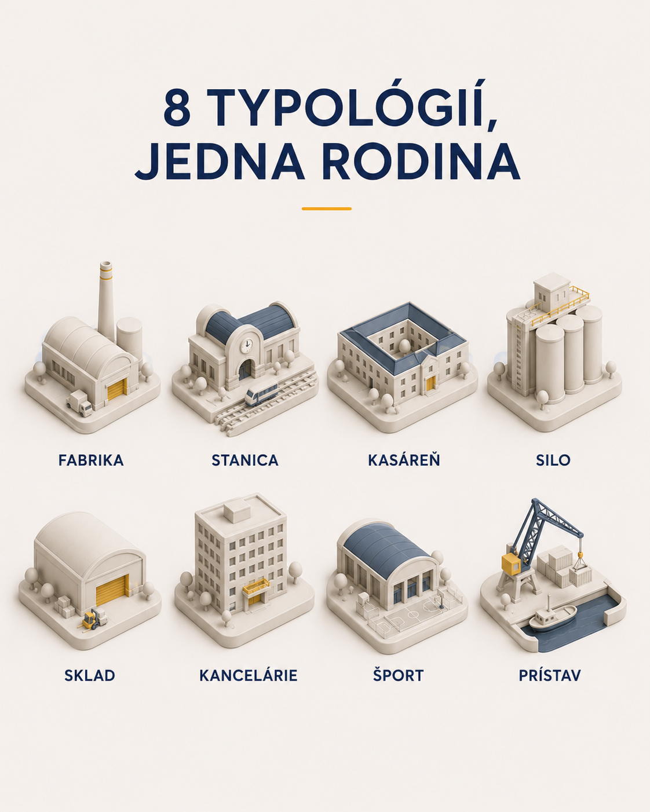

05 · Ilustračná vrstva
Spiaci obri — 113 obrov Bratislavy


Obor = pôvodné využitie územia — to, čím miesto bolo, kým zaspalo. Fabrika spí v Palme a Matadore, Stanica na Filiálke, Kasáreň v bývalej raketovej základni.
Gramatika tváre: oči = stav, ústa = energia, aura = jas. Dieťa pochopí obra, urbanista typológiu — jeden systém, dve čítania.
Celý character sheet je generovaný kódom: jedna silueta na obra, stav je len funkcia. 10 typológií × 4 stavy = 40 ilustrácií z jednej šablóny.